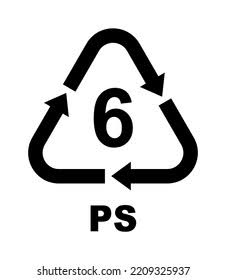

POLIESTIRENO

El poliestireno (PS, por sus siglas en inglés) es un polímero termoplástico, también conocido como cristal plástico o vidrio plástico. Es un plástico duro, convertido en uno de los más importantes del mercado, que se utiliza en alimentación, laboratorio, juguetería, embalajes y multitud de aplicaciones más.